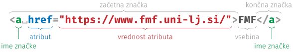

```markdown # Naslov Besedilo je lahko **poudarjeno** ter vsebuje [povezave](https://www.fmf.uni-lj.si/), `programsko kodo` in sezname: - prva točka - druga točka - tretja točka ``` ```html <h1>Naslov</h1> <p>Besedilo je lahko <strong>poudarjeno</strong> ter vsebuje <a href="https://www.fmf.uni-lj.si/">povezave</a>, <code>programsko kodo</code> in sezname:</p> <ul> <li>prva točka</li> <li>druga točka</li> <li>tretja točka</li> </ul> ``` --- <p></p> --- ```html [1-10|1,2,10|3-6|7-9|5|4] <!DOCTYPE html> <html> <head> <meta charset="UTF-8"> <title>Naslov strani</title> </head> <body> ... </body> </html> ```
```css body { font-family: serif; } h1, h2 { color: maroon; font-family: sans-serif; text-align: center; margin: 1em; } ``` --- <h1 style="font-family: serif">serif</h1> <h1 style="font-family: sans-serif">sans-serif</h1> --- <img class="r-stretch" src="box-model.png" alt="škatlasti model" /> --- ```html <znacka style="color: red">...</znacka>` ``` --- ```html [5] <!DOCTYPE html> <html> <head> ... <link rel="stylesheet" href="stil.css"> </head> <body> ... </body> </html> ``` --- ```html [5-9] <!DOCTYPE html> <html> <head> ... <style> body { font-family: serif; } </style> </head> <body> ... </body> </html> ``` --- HTML ```html <znacka>...</znacka> ``` CSS ```css ⟨znacka⟩ { ... } ``` --- HTML ```html <znacka id="⟨id-elementa⟩">...</znacka> ``` CSS ```css #⟨id-elementa⟩ { ... } ``` --- HTML ```html <znacka class="⟨razred⟩">...</znacka> ``` CSS ```css .⟨razred⟩ { ... } ``` --- ```html <div>...</div> <p>...<span>...</span>...</p> ```